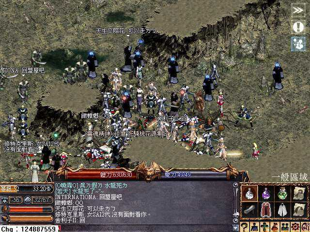
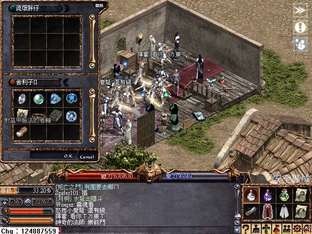
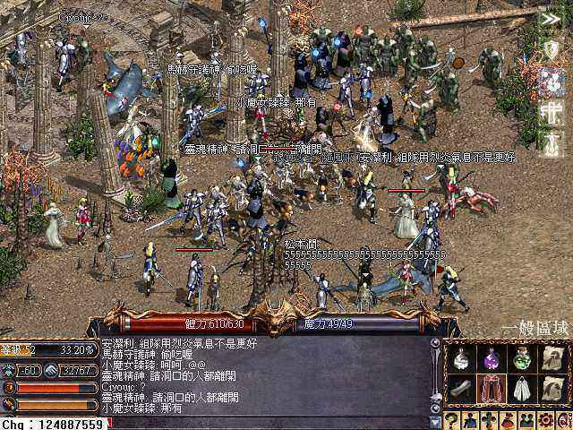
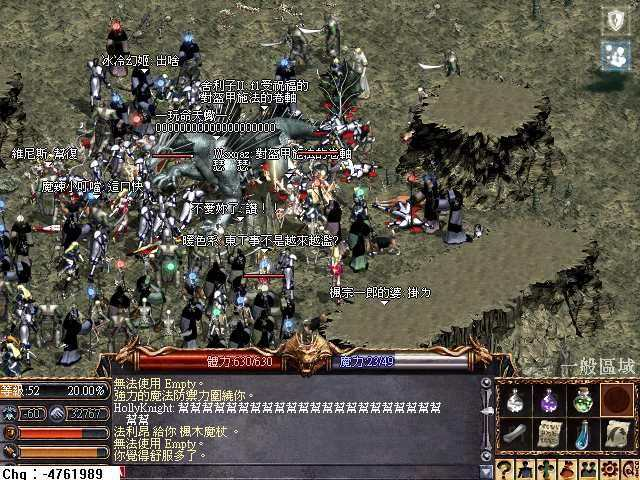
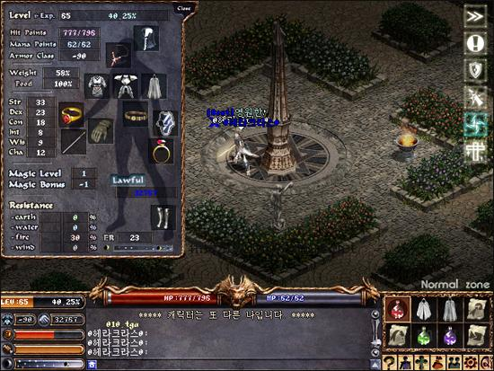

|
2002年11月23日
台灣收穫伺服器成功擊倒水龍
最近傳出台灣飛馬二死騎擊倒的水龍的消息後，各伺服器的死騎將自己的生死置之度外，務求將水龍擊倒，似乎擊倒水龍那份光榮感及水龍的寶物遠比自己的經驗值為重要。而剛剛台灣收穫伺服器的水龍便被擊倒了兩次！不過由於屠龍消息傳得太廣，引來不少看戲和幫水龍加速回血的人到場干擾，由此大家想屠殺水龍的話，除了要解決技術上的因素外，亦要考慮人為的因素。另外長此下去相信官方會和韓國方面一樣將水龍鎖起。
（假如閣下有其他伺服器最近擊倒水龍的消息及圖片，請電郵給本網，謝謝）
以下圖片取自四素館家族：




NCsoft與新浪合作在中國大陸提供天堂服務
來源：新浪官方網站公告、Lineage Compendium
NCsoft將會與新浪合作在中國大陸提供天堂服務，合資經營的公司暫名為NC Sina Entertainment，總投資額為500萬美元，NCsoft佔49%，而新浪則佔51%（與香港的NCsoft佔51%，Gamania佔49%有點不同），該公司大約會在明年1月開始運作。
韓國伺服器另一名65級-90防角色
來源：Lineage Playforum

他所使用的防具包括+9T恤和+9保斗，其他的防具估計為+8精甲、+8祝精盾、+8騎面、+7鋼靴及+7力套，加上本身的敏捷減16防，再配合鎧甲護持及鋼鐵防護，剛好是-90防。(9+12+14+10+11+10+7+16+3+8 = 100)
在此有一個疑問，他的力量已經到達頂點（基本25力），而敏捷亦到達最有用的地步（18敏），再加體質亦對HP上限不會有太大影響，那麼他在下個等級會加那一樣能力值呢？ |